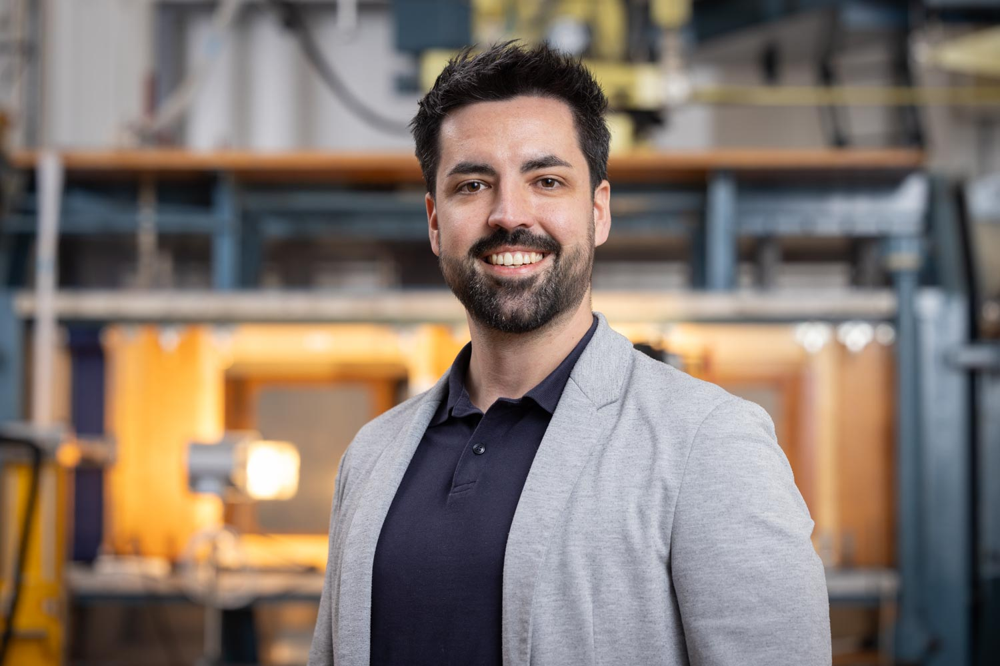
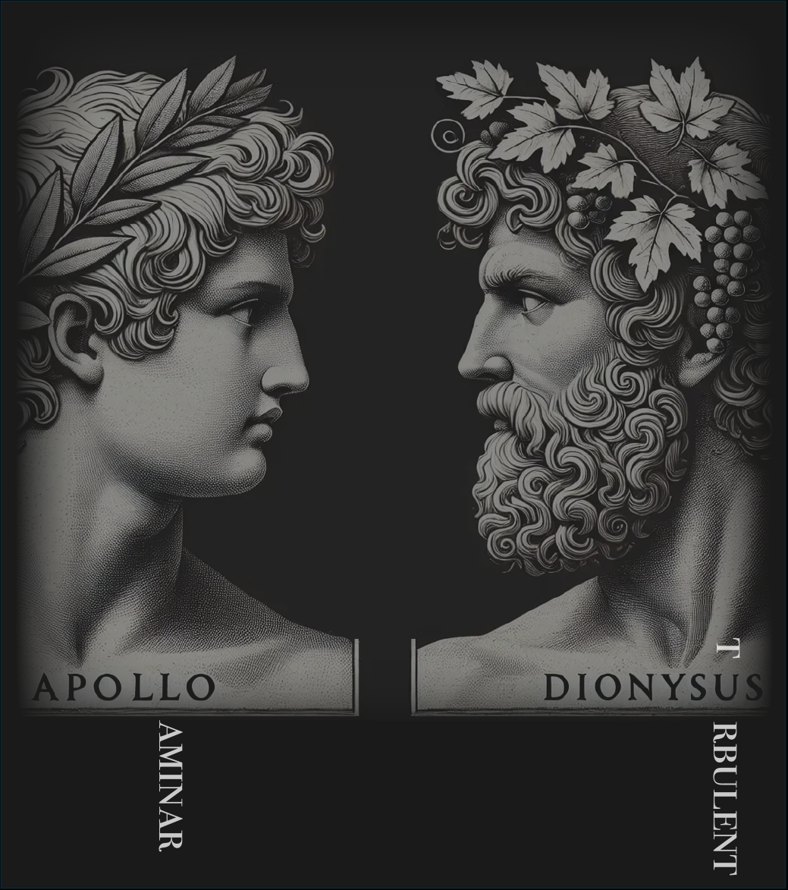

I am a Postdoctoral Researcher in Numerical Aerodynamics and Flow Stability at TU Delft. My research focuses on the theoretical and computational study of laminar-turbulent transition in aerodynamic boundary layers.
In our group of Flow Control we develop novel laminar wings to significantly reduce the pollutant emissions. Follow us and join the revolution on super-efficient aircraft wings since, aviation will be green, or will not be.
Making aviation greener through aerodynamics.

Investigating the mechanisms by which smooth and sharp surface features passively stabilize the stationary crossflow instability.
Developing Bayesian-optimization frameworks coupled to Harmonic Navier-Stokes solvers to design optimal wing-surface reliefs for flow control.
Establishing a uniform mathematical framework uniting how Tollmien-Schlichting and crossflow instabilities interact with inhomogeneities through production.
Performing Direct Numerical Simulations (DNS) to elucidate mechanisms of laminar breakdown, with emphasis on type-II secondary crossflow instabilities.
Creating data-driven frameworks to isolate key base-flow features for effective instability control and transition prediction.
Open-source code to simulate and model wing-flow boundary layer and instability (OpenFOAM and Julia):
S. Westerbeek, J. Casacuberta, M. Kotsonis · J. Fluid Mech. 1026, A43
K. J. Groot, J. Casacuberta, S. Hickel · Comput. & Fluids 306, 106947
A. F. Rius-Vidales, L. Morais, S. Westerbeek, J. Casacuberta, M. Soyler, M. Kotsonis · J. Fluid Mech. 1014, A35
J. Casacuberta, S. Westerbeek, J. A. Franco, K. J. Groot, S. Hickel, S. Hein, M. Kotsonis · Phys. Rev. Fluids 10, 023902
J. Casacuberta, S. Hickel, A. F. Rius-Vidales, M. Kotsonis · 10th IUTAM Symposium, Nagano, Japan
J. Casacuberta, S. Hickel, M. Kotsonis · Phys. Rev. Fluids 9, 043903
O.W.G. van Campenhout et al. · Int. J. Heat Fluid Flow 100, 109110
J. Casacuberta, S. Hickel, M. Kotsonis · DLES 2023, ERCOFTAC Series, vol 31, Springer
J. Casacuberta, K. J. Groot, S. Hickel, M. Kotsonis · 14th ERCOFTAC Symposium, Barcelona, Spain
J. Casacuberta, S. Hickel, S. Westerbeek, M. Kotsonis · J. Fluid Mech. 943, A46
J. Casacuberta, K. J. Groot, S. Hickel, M. Kotsonis · AIAA 2022-2330
J. Casacuberta, S. Hickel, M. Kotsonis · 13th Workshop on Direct and Large-Eddy Simulation, Udine, Italy
J. Casacuberta, S. Hickel, M. Kotsonis · European Drag Reduction and Flow Control Meeting, Paris, France
O. Krochak, J. Casacuberta, S. Hickel, M. Kotsonis · 12th TSFP, Osaka, Japan
S. Westerbeek, J. Casacuberta, M. Kotsonis · 14th ERCOFTAC SIG 33 Workshop, Cádiz, Spain
J. Casacuberta, S. Hickel, M. Kotsonis · AIAA 2021-0854
J. Casacuberta, K. J. Groot, Q. Ye, S. Hickel · Flow Turb. Comb. (2020)
K. J. Groot, J. Casacuberta, Q. Ye, S. Hickel · Ercoftac Bulletin 118, March 2019
J. Casacuberta, K. J. Groot, H. J. Tol, S. Hickel · J. Comput. Phys. 375, 481–497
J. Casacuberta, K. J. Groot, Q. Ye, S. Hickel · 12th ERCOFTAC Symposium, Montpellier, France
K. J. Groot, J. Casacuberta, Q. Ye, S. Hickel · 13th ERCOFTAC SIG 33 Workshop, Paraty, Brazil
E. Soudah, J. Casacuberta et al. · J. Mech. Med. Biol. 17, 1750046
J. Casacuberta, E. Soudah et al. · ICCB 2015, Barcelona, Spain
This section is still lacking objective meaning and shaping its values –much like existence itself.
